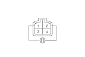
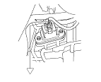

Blower Power Transistor Test
NOTE: RHD type is shown, LHD type is symmetrical.
Remove the passenger's dashboard under cover.
Disconnect the 4P connector from the power transistor.
Measure the resistance between the No. 1 and No. 2 terminals of the power transistor. It should be about 1.5 kΩ.
If the resistance is within the specifications, go to
Step 4
.
If the resistance is not within the specifications, replace the power transistor.

Carefully release the lock tab on the No. 4 terminal (RED) (A) in the 4P connector, then remove the terminal and insulate it from body ground.
Reconnect the 4P connector to the power transistor.
Make sure the RED wire is completely isolated, then supply 12 volts to the No. 4 cavity with a jumper wire.
Turn the ignition switch ON (II), and check that the blower motor runs.
If the blower motor does not run, replace the power transistor.
If the blower motor runs, the power transistor is OK.
